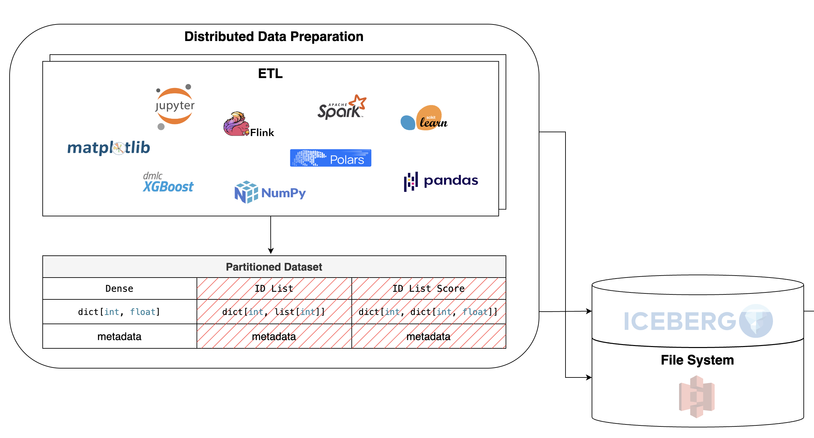

Distributed Data Preparation#
The first stage of every ML system is data preparation. It varies and depends on the implementation of a data platform. However, the industry dictates some standard rules and best practices.
{kind=link}
{kind=link}
{kind=link}
{kind=link}
From the examples above, you can identify that the key component is a data format. It evolves throughout the entire pipeline, becoming more general and uniform in nature. The data flow is fault-tolerant and easily scalable. Temporal snapshots of the data and the scalability determine the fault tolerance.
Note
Despite the intention to make the flow general as much as possible, some problems and datasets don’t require such parallelism and concurrency, so other tools and libraries can be used to process the data.
The production data flow pipeline typically begins with logging user activity and writing it to a data source. Then, the ETL pipeline processes the raw data. Usually, this pipeline is differentiated into two types: streaming and batching. The processed data was then loaded into a data warehouse (DWH) or a data lake, which usually pre-defines a data format.
{kind=link}

The structure above was proposed by Meta and is widely used in the industry.
We process the raw data as we want, using any tools and libraries. There’s no restriction on the way you process the data. It’s recomended to use a distributed data processing framework, such as Apache Spark or Apache Flink, to process the large amounts of data. But in case of smaller datasets, you can use any other tools, such as Pandas or Polars.
Further, the data should be formatted in a specific way, s.t. the post-processing pipeline can work with it. We will discuss the data format in the next section Data Formatting.
Raw Data Processing#
Warning
Currently, the library supports only Apache Spark as a data processing framework. You can still work with other libraries, such as Pandas or Polars, but you should store the result table via Spark API. In future releases, I will add support for other data processing frameworks.
Load raw data …
Import data manipulation libraries
import numpy as np
import pandas as pd
Import Spark auxiliaries
import pyspark.sql.types as T
import pyspark.sql.functions as F
Import Spark session initialization function
from yggdrasil.data.etl.spark.init import get_spark_session
Initialize Spark session with the default configuration
spark = get_spark_session()
Create a synthetic binary dataset with 10000 samples and 128 features
NSAMPLES, NUM_FEATURES = 10000, 128
input_matrix = np.random.rand(NSAMPLES, NUM_FEATURES)
df = spark.createDataFrame(
pd.DataFrame(
{
**{
f"feature_{i}": input_matrix[:, i].tolist()
for i in range(NUM_FEATURES)
},
"target": np.random.randint(2, size=NSAMPLES).tolist(),
}
)
)
del input_matrix
Import data manipulation libraries
import pandas as pd
from sklearn.datasets import fetch_openml
Import Spark auxiliaries
import pyspark.sql.types as T
import pyspark.sql.functions as F
Import Spark session initialization function
from yggdrasil.data.etl.spark.init import get_spark_session
Initialize Spark session with the default configuration
spark = get_spark_session()
Load the MNIST dataset from OpenML and convert it to a Spark DataFrame
# Extract raw data
pdf: pd.DataFrame = fetch_openml('mnist_784', version=1, as_frame=True).frame
pdf = pdf.rename(columns={j: str(i) for i, j in enumerate(pdf.columns[:-1])})
pdf["class"] = pd.to_numeric(pdf["class"])
schema = T.StructType(
[
T.StructField(i, T.IntegerType(), True)
for i in pdf.columns
]
)
# Coalesce to a single partition for easier handling wide datasets
df = spark.createDataFrame(pdf, schema=schema).coalesce(1)
del pdf
Transform data to the specified format Data Formatting …
Add a unique identifier to each row in the DataFrame
df = df.withColumn("uid", F.monotonically_increasing_id())
Convert the DataFrame to a sparse vector format, where each feature is represented as a key-value pair in a map. The keys are the feature indices, and the values are the feature values. The resulting column is renamed to “features” and the original feature columns are dropped.
select_cols = [f"feature_{i}" for i in range(NUM_FEATURES)]
df = df.withColumn(
"sparse_vector",
F.create_map(
*list(
sum(
[
(F.lit(fid).cast("int"), F.col(f"`{fname}`").cast("double"))
for fid, fname in enumerate(select_cols)
],
(),
)
)
)
).drop(*select_cols).withColumnRenamed("sparse_vector", "features")
Add a unique identifier to each row in the DataFrame
df = df.withColumn("id", F.monotonically_increasing_id())
Convert the DataFrame to a sparse vector format, where each feature is represented as a key-value pair in a map. The keys are the feature indices, and the values are the feature values. The resulting column is renamed to “features” and the original feature columns are dropped.
feature_cols = [str(i) for i in range(784)]
df = df.withColumn(
"sparse_vector",
F.create_map(
*list(
sum(
[
(F.lit(fid).cast("int"), F.col(f"`{fname}`").cast("double"))
for fid, fname in enumerate(feature_cols)
],
(),
)
)
)
).drop(*feature_cols).withColumnRenamed("sparse_vector", "features")
Store the result table in a dedicated file system …
spark.sql("DROP TABLE IF EXISTS demo_processed")
df.select(
F.col("uid").cast(T.LongType()).alias("uid"),
F.col("features").cast(T.MapType(T.IntegerType(), T.FloatType())).alias("features"),
F.col("target").cast(T.ShortType()).alias("target"),
).write.mode("overwrite").saveAsTable("demo_processed")
spark.sql("DROP TABLE IF EXISTS mnist_784")
df.select(
F.col("id").cast(T.LongType()).alias("id"),
F.col("features").cast(T.MapType(T.IntegerType(), T.FloatType())).alias("features"),
F.col("class").cast(T.ShortType()).alias("target"),
).write.mode("overwrite").format("parquet").saveAsTable("mnist_784")
Data Formatting#
The data is stored in the format that aligns with the data processing framework used in the pipeline. Namely, the features are splitted into three common groups:
Dense (
map<int, float>): The features are stored in a dense vector format, where each feature is represented as a single value. This format is typically used for numerical features, such as floats or integers. E.g., price of an item, age of a person, etc.ID List (
map<int, list<int>>): This is a way to represent categorical features, where each feature is represented as a list of IDs. This format is typically used for categorical features, such as user IDs, item IDs, etc. The IDs are stored as integers, and the list can contain multiple values. E.g., pages a user clicked, items a user bought, etc.ID List Score (
map<int, map<int, float>>): Some sparse features are stored in an additional column that further associates each categorical value with a floating point “score” used for weighing. E.g., page creation time.
Warning
Currently, the library supports only map<int, float> format for dense features.